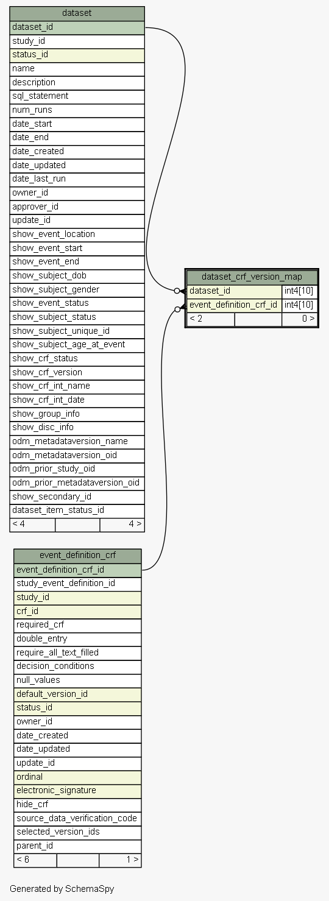
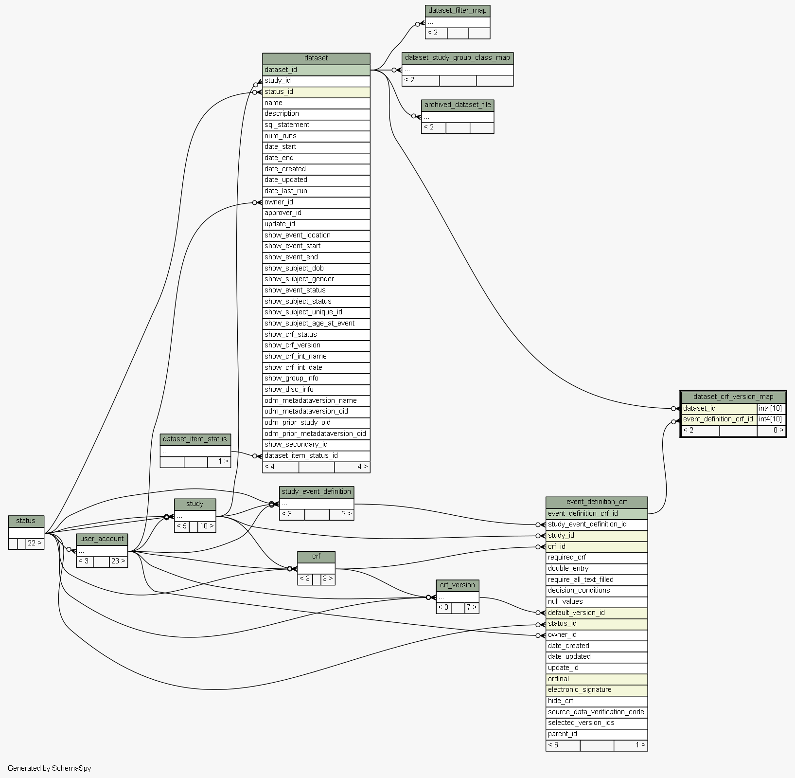

| Table oc312.public.dataset_crf_version_map | Generated by SchemaSpy |
| |||||||||||||||||||||||||||||||
Analyzed at za okt 20 16:34 CEST 2012 | |||||||||||||||||||||||||||||||
Indexes:
| Column(s) | Type | Sort | Constraint Name |
|---|---|---|---|
| dataset_id | Performance | Asc | i_dataset_crf_version_map_dataset_id |
| event_definition_crf_id | Performance | Asc | i_dataset_crf_version_map_event_definition_crf_id |
|
  |